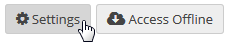
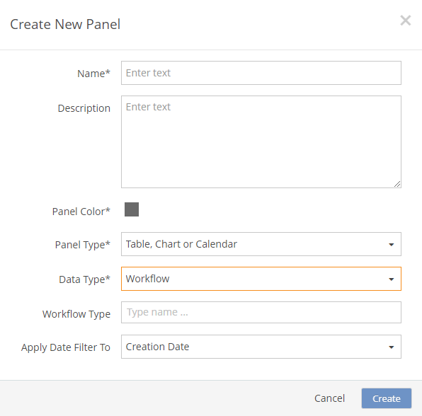
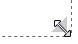
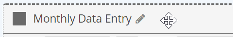
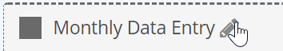
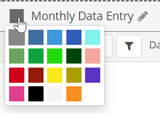

From the page view, click Settings.

Click Add Panel.

You can add panels to a page by selecting a panel template or by creating a new panel. Panel templates may be useful if you are creating a lot of panels of one type with similar properties. To create a panel template, see Panel Templates.
To add a panel to a page:
From the page view, click Settings.

Click Add Panel.
To select a panel from the panel templates:
Browse the available templates using the Next and Previous buttons, or search by entering text in the search box.
The list is automatically filtered for template names that match the search string.
To create a new panel without a template:
Select Create New Panel.

Select the Panel Type:
Table, Chart or Calendar
Metric
Quick Links
Iframe/Webpage
For a Quick Link panel or iFrame panel, just click Create. See Quick Links Panel Configuration and iFrame Panel for further instructions.
Select the Data Type: Workflow, Numeric Grid, Event, Task, or Data View.

If the Data Type is Workflow, select:
Workflow Type: Select one or more workflow types.
If you do not select a workflow type, all workflows will be included.
If the Data Type is Event, select:
Event Templates: Select one or more Event Templates.
If you do not select an event template, all events will be included.
If the Data Type is Task:
Task Templates (optional): Select one or more Task Templates.
If you do not select a Task Template, all Task Templates will be included, as well as tasks without a task template.
If the Data Type is Data View:
Data View: Select the query whose data will be displayed in the panel.
Object ID fields are the ID fields in one of the following EQL tables: Division, Facility, Unit, POI, Requirement, and ComplianceObject. In some cases, other composite versions of these fields (for example 'POI.FacilityID') may be used. When you create a Data View in the Data Preparation Tool for use in the Portal, you must include one of these fields in order for the Portal page and/or Panel Object Selectors to properly filter the panel.
You can search workflow types, event templates or task templates by name by entering a few characters, then selecting from the matches offered. If no selections are made, all workflows or events will be displayed.
Select Create.
While still in Settings mode, you can edit the panel configuration by clicking Edit Panel Content.

See further configuration details for each data type:
To resize a panel:
Hover over a side or corner of the panel To display the resize icon. Click and hold while you drag the panel to the desired size.

Size settings are applicable only when the browser allows. Panel size will automatically adjust for the viewing device.
To change the order of panels:
Hover over the top colored bar in the panel. The "move" icon (cross) will appear. Click and hold while you drag the panel to the desired location.

You can place two panels next to each other for a double column layout (for desktop viewing only). When viewing on a smaller browser, panels will be stacked rather than side-by-side.
To rename a panel:
Click the editing pencil next to the panel name. After editing, click the checkmark to save.

To change the panel color:
Click the color square next to the panel name and select a color.
